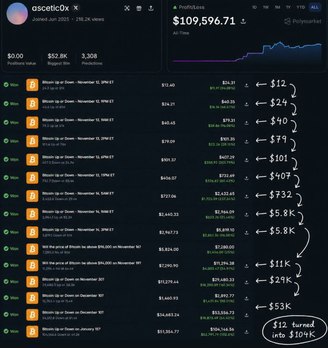

Dude Turned $12 Into $109K In The BTC 5-Minute Market

Most people who win a bet on Polymarket do the sensible thing: they cash out, maybe re-up with a smaller stake, and move on. The wallet behind the handle ascetic0x did the opposite. It took a $12.40 position on a Bitcoin Up or Down market, won, and then shoved the entire payout — principal and profit together — straight into the next five-minute market. Then it did that again. And again.
No new deposits. No partial cash-outs. Just one continuous chain of all-in bets on whether Bitcoin would tick up or down in the next few minutes. By the time the streak was screenshotted, the account's all-time profit sat at $109,596.71, built off 3,308 total predictions and a biggest single win of $52.8K — with current open positions sitting at exactly $0.00, meaning every dollar was, once again, riding on the next bet.
The chain, bet by bet
The run that made the account notable started small enough to look like nothing. $12.40 in on a Bitcoin Up or Down market for November 12 turned into $24.31. That $24.31 went straight back in and came out as $40.35. From there the payouts read like a compounding table someone forgot to stop: $40.35 became $79.31, which became $101.35, which became $407.06 on a single well-timed "Down" call.
The chain didn't slow down from there. $407.06 grew into $732.69. That became $2,432.65, then $2,964.09, then $5,819.10. A jump onto a longer-dated "will BTC be above $96,000" market pushed the stack to $7,280.00, and a similar longer-horizon bet carried it to $11,294.38. From there: $29,480.33, then $53,556.73, and finally $104,146.56 off a single January 15 Bitcoin Up or Down market — before settling into an all-time profit figure of $109,596.71 shown on the profile today.
Why this isn't really a "strategy"
It's tempting to read a chain like this as a system — some edge in reading five-minute Bitcoin candles that the rest of the market doesn't have. But letting an entire payout ride, bet after bet, isn't a strategy in the way a hedge or a spread is a strategy. It's a compounding bet on a coin flip that happens to have been landing heads. Each individual market resolved close to 50/50; what made the number balloon wasn't edge, it was leverage on top of leverage, with zero money ever taken off the table.
That's exactly what makes it spectacular to watch and nearly impossible to recommend. A trader with a real edge wants to size bets so that a loss doesn't erase the run. A trader who is letting it ride is, by definition, one wrong five-minute candle away from giving all of it back.
The loss that ends it
This is the part the screenshot can't show: nothing in the record says the streak is still alive by the time you're reading this. A chain built entirely on parlaying the full stack forward has exactly one failure mode, and it's terminal — there's no partial version of it. Win 20 times in a row at even odds and lose once with everything riding on it, and the streak's ending balance is the same as if none of the wins had happened.
That's not a knock on the trader. It's just the arithmetic of a martingale-style run in a market that doesn't owe anyone a 21st win. The $0.00 positions value on the profile means one of two things: the money is sitting in the next open bet right now, or it already rode straight through a loss and reset to zero. Both are consistent with the same style of play.
The takeaway
A $12 stake turning into six figures is a genuinely fun thing to see happen in public, on-chain, with every bet timestamped and verifiable. But it's a story about variance, not about a repeatable edge in Bitcoin's five-minute moves. If you're tempted to copy the approach, the honest framing is: this is what a long win streak looks like right up until the moment it doesn't — and the size of the number makes that moment more painful, not less likely.
See ascetic0x's historical positions and P&L directly on Polymarket.